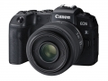

器材库 > 35mm画幅可换镜头数码相机 > EOS RP

规格总览
产品类型
35mm画幅可换镜头数码相机
发布日期
2019-02-14
影像规格
影像传感器
CMOS
影像传感器尺寸
35.9×24mm
有效像素
2620万
影像处理器
DIGIC 8
静态图像格式
JPEG, RAW, RAW+JPEG
静态图像尺寸
L（大）：约2600万像素（6240×4160），M（中）：约1150万像素（4160×2768），S1（小1）：约650万像素（3120×2080），S2（小2）：约380万像素（2400×1600），RAW：约2600万像素（6240×4160），C-RAW：约2600万像素（6240×4160）
画幅比
3:2, 4:3, 16:9, 1:1
短片格式
MPEG4-AVC/H.264
短片尺寸
4K（3840×2160）、全高清（1920×1080）、高清（1280×720），使用RF/EF镜头拍摄HDR短片时：全高清，使用EF-S镜头、短片裁切时：高清，拍摄延时短片时：4K/全高清
音频格式
AAC（“C.Fn III-9：音频压缩”设置为“0：启用”时），线性PCM（“C.Fn III-9：音频压缩”设置为“1：关闭”时）
除尘系统
自动、添加除尘数据
镜头和对焦
镜头卡口
Canon RF
兼容镜头
佳能RF系列镜头及EF系列镜头 ※通过安装卡口适配器，可支持EF/EF-S镜头（不支持EF-M，CN-E镜头）
对焦系统类型
全像素双核CMOS AF（Dual Pixel CMOS AF）相差检测方式
对焦点
4779个自动对焦点位
AF辅助灯/光
有
曝光控制
测光系统
使用图像感应器的实时测光，384区（24×16）测光。
测光模式
评价测光, 点测光, 局部测光, 中央重点平均测光
拍摄模式
基本拍摄区：场景智能自动、特殊场景模式；创意拍摄区：灵活优先自动曝光、程序自动曝光、快门优先自动曝光、光圈优先自动曝光、手动曝光、B门曝光、自定义拍摄模式（C1、C2、C3）；短片拍摄：短片自动曝光、短片手动曝光、HDR短片
场景模式
人像、合影、风光、运动、儿童、摇摄、微距、食物、夜景人像、手持夜景、HDR逆光控制、静音模式
快门类型
电子控制焦平面快门
快门速度
1/4000至30秒（总快门速度范围。可用范围随拍摄模式各异）、B门、闪光同步速度1/180秒 ※短片拍摄时的设置范围不同
曝光补偿
±3EV以1/3或1/2EV级调整
自动曝光锁
有
自动包围曝光
在±3级间以1/3或1/2级为单位调节（可与手动曝光补偿组合使用）
ISO感光度
基本拍摄区：ISO感光度自动设置；创意拍摄区：自动ISO、在ISO 100～40000范围内手动设置（以1/3级或整级为单位），可扩展到L（相当于ISO 50）、H1（相当于ISO 51200）、H2（相当于ISO 102400）
白平衡
自动（氛围优先)、自动（白色优先)、预设（日光、阴影、阴天、钨丝灯、白色荧光灯、闪光灯）、用户自定义、色温设置（约2500-10000K），具备白平衡校正和白平衡包围曝光功能 ※支持闪光色温信息传输
自拍
10秒 / 2秒
连拍
高速连拍：最高约5张/秒低速连拍：最高约2.6张/秒
闪光灯
闪光补偿
±3EV以1/3或1/2EV级调整
外接闪光灯
EL/EX系列闪光灯
取景器/显示屏
取景器
有机EL彩色电子取景器
取景范围
100%
取景放大倍率
约0.7倍
屈光度调节范围
约-4.0～+1.0m-1（dpt）
LCD类型
彩色TFT LCD
LCD尺寸
3.0英寸
LCD像素
104万
视野率
100%
LCD特性
触摸屏, 翻转屏
亮度调节级数
7级
文件输入/输出
记录媒介
SD/SDHC, SDXC
数据接口
高速USB
视频/音频接口
HDMI Mini 输出
无线功能
Wi-Fi, 蓝牙
电源
电池
电池LP-E17（1块）
续航能力
静态图像：可拍摄约250张；短片：可拍摄约1小时40分钟
外接电源
可以通过家用电源插座附件使用交流电。可通过USB电源适配器PD-E1为相机内的LP-E17充电。
机身规格
颜色
黑色
尺寸
132.5×85×70mm
重量
仅机身约440g / 含电池和存储卡约485g
其它
配件端口
遥控线, 耳机, 三脚架接孔, 麦克风输入端子
工作温度
0 ~ 40℃
工作湿度
不高于85%
附件
电池充电器 LC-E17C（含电源线），锂电池 LP-E17，相机背带 ER-EOSRP
匿名网友2019-10-13 13:124.56 分
操作性 4.50功能性 4.50美观性 5.00趣味性 4.50耐用性 4.00性价比 5.00解像力 4.50色彩还原 4.50
arondes2019-08-26 20:574.63 分
操作性 4.50功能性 4.50美观性 4.50趣味性 4.50耐用性 4.50性价比 5.00解像力 4.50色彩还原 5.00
匿名网友2019-07-05 23:234.5 分
操作性 5.00功能性 5.00美观性 4.00趣味性 4.50耐用性 4.00性价比 5.00解像力 4.00色彩还原 4.50
wanjiash2019-05-08 11:414.81 分
操作性 5.00功能性 4.50美观性 5.00趣味性 5.00耐用性 4.50性价比 5.00解像力 4.50色彩还原 5.00
产品图 / 样片
EOS RP
评测 / 相关文章
- 详细内容 （存档）
- 全画幅无反新起点 佳能EOS RP评测 实拍及画质 （原站已下线）
- 全画幅无反新起点 佳能EOS RP评测 外观及操控 （原站已下线）
- ［影像］人像新玩具EOS RP转接EF 50L拍外模 （原站已下线）
- ［试用］佳能EOS RP轻便小巧的全能相机 （原站已下线）
- ［资讯］佳能EOS RP全面大拆解 （原站已下线）
- ［资讯］佳能EOS RP开箱图赏 （存档）
- ［资讯］佳能全画幅专微新机EOS RP官方样片欣赏 （存档）
- ［资讯］佳能EOS RP 最小代价拥抱全画幅无反 （存档）
相关文章
- ［影像］人像新玩具EOS RP转接EF 50L拍外模 （原站已下线）
- ［试用］佳能EOS RP轻便小巧的全能相机 （原站已下线）
- ［资讯］佳能EOS RP全面大拆解 （原站已下线）
- ［试用］佳能EOS RP评测 实拍及画质 （原站已下线）
- ［试用］佳能EOS RP评测 外观及操控 （原站已下线）
- ［资讯］佳能EOS RP开箱图赏 （存档）
- ［资讯］佳能全画幅专微新机EOS RP官方样片欣赏 （存档）
- ［资讯］佳能EOS RP 最小代价拥抱全画幅无反 （存档）
- ［资讯］佳能推出全画幅专微新机型EOS RP （存档）